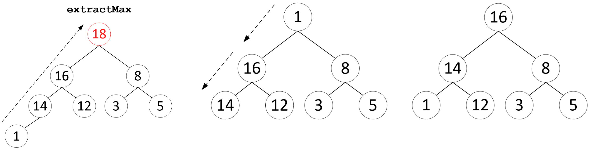
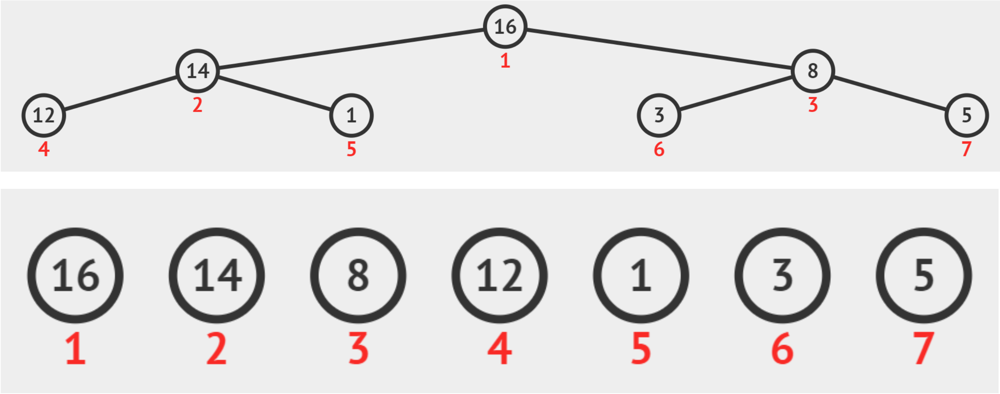

Ключ каждого узла больше или равен ключам узлов-потомков

| Операция | Сложность |
|---|---|
| $get\_max$ | $O(1)$ |
| $insert$ | $O(log_2(N))$ |
| $extract\_max$ | $O(log_2(N))$ |
| $change\_key$ | $O(log_2(N))$ |

i << 1)(i << 1) | 1)i >> 1)Более эффективная реализация пирамидальной сортировки состоит из следующих шагов:
$$O(N) + N(O(1) + O(log_2(N)) + O(1)) =\\ = O(N) + O(N) + O(Nlog_2(N)) + O(N) =\\ = 3O(N) + O(Nlog_2(N)) =\\ O(Nlog_2(N))$$
В языке C++ очередь с приоритетами представлена контейнером std::priority_queue